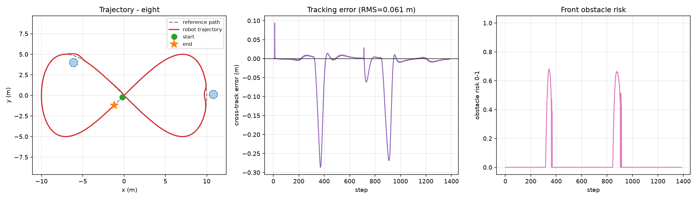
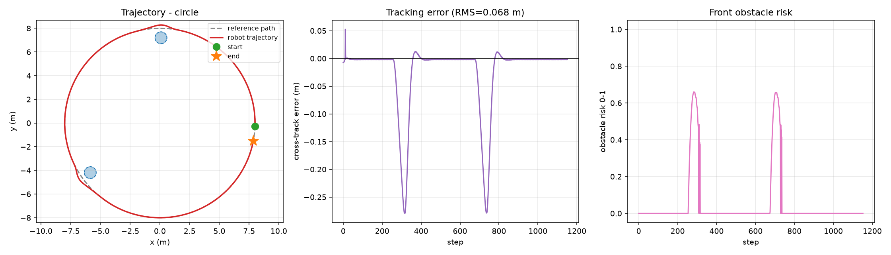
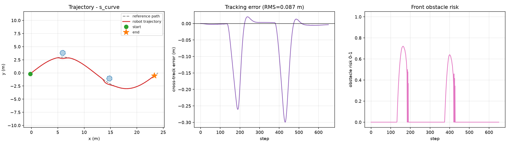
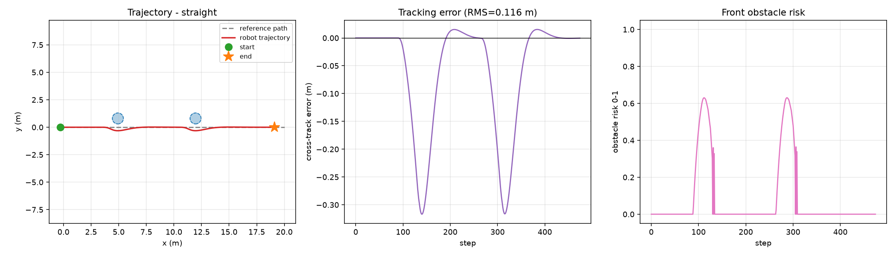
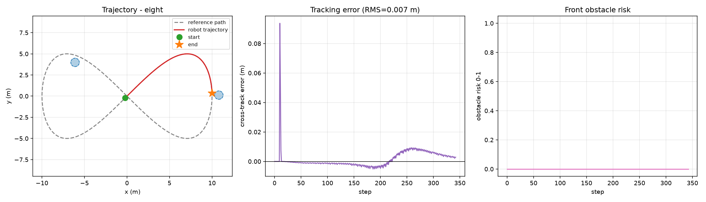
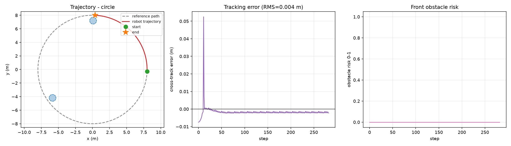

地面载具 ROS2 差速机器人纯追踪路径跟踪与反应式避障
本文档介绍 src/ground/ros2_pure_pursuit 模块：一个差速移动机器人的路径跟踪 + 激光反应式避障实现。
与仓库中其他地面载具模块的区别：本模块不依赖 CARLA / Gazebo / 任何仿真器，
核心算法与闭环仿真只用 NumPy，因此在没有 GPU、没有仿真环境的机器上也能完整复现；
同时提供 ROS 2 (Humble) 节点与 ros2 launch 入口。
- 源代码目录：
src/ground/ros2_pure_pursuit - 一键复现：
cd src/ground/ros2_pure_pursuit && python3 sim/run_sim.py --path eight - 一键检查：
bash ci/run_ci.sh（语法 → 依赖 → 测试 → 仿真 → 基准，五阶段）
1. 目标与系统架构
在 ROS2 环境下实现差速移动机器人的自主跟踪能力：
- 沿任意给定的离散参考路径稳定行驶；
- 路径上存在静态障碍时安全通过，不发生碰撞；
- 代码在无 ROS 环境中同样可运行、可验证，便于在课程环境中快速复现。
┌──────────────────────────────┐
/scan ──────▶│ ObstacleAvoider │
│ 前向扇区最小测距 → 危险度 r │──▶ turn_bias
└──────────────────────────────┘ slow_factor
│
/odom ──────▶┌──────────────────────────────┐ │ ┌──────────┐
参考路径 ─────▶│ PurePursuitController │──▶ ω_pure ─▶│ /cmd_vel │
│ 前视点 → 曲率 → 角速度 │──▶ v_ref ─▶└──────────┘
└──────────────────────────────┘
跟踪层（Pure Pursuit）负责几何意义上的「贴紧路径」；避障层（Obstacle Avoider） 负责安全。两层输出通过角速度叠加、线速度相乘的方式融合，无状态耦合，便于单独调参。
2. 运动学模型
差速驱动机器人在平面上的离散运动学：
底层轮速由 反解（wheel_base 为轮距 ，轮半径 ）：
实现中加入了加速度限幅： 每周期不超过 ， 避免速度指令阶跃导致轮胎打滑，也便于在真车上做平滑控制。
3. 纯追踪控制器
3.1 前视点选取
在参考路径上寻找距离当前位置 的点 ，并用线性插值保证 目标点始终落在路径折线上，而不是落在某个离散步之间。
前视距离随速度线性变化：
参数取值（PurePursuitController）：
| 参数 | 默认值 | 含义 |
|---|---|---|
ld0 |
0.6 | 基础前视距离 (m) |
k |
0.45 | 速度系数 (s) |
ld_min |
0.4 | 前视距离下限 (m) |
ld_max |
2.5 | 前视距离上限 (m) |
goal_tol |
0.25 | 终点判定半径 (m) |
3.2 曲率与角速度
将前视点变换到车体坐标系（前向 ，左向 ）：
航向偏差 ，由纯追踪的经典几何关系， 过前视点的圆弧曲率为 ，于是
3.3 稳定性说明
纯追踪在 固定时对路径曲率变化是稳定的；前视距离随速度增大而增大， 本质上等价于在高速时降低控制增益，抑制了差速机器人在大曲率路径上的转向震荡。 本实现中 m 大于车长 0.36 m，可避免前视点落在车身内部导致的奇异。
4. 反应式避障
4.1 危险度
取车头前方 扇区内的最小测距 ：
其中 m、 m。
4.2 转向策略
比较扇区左右两半的平均余量，向更空旷的一侧施加偏置：
rad/s。使用半扇区均值而不是最近点的单点距离，是为了避免被单个噪点带偏。
4.3 速度耦合
危险度为 1 时速度降至 15%。这一点很关键：反应式避障的转向能力与速度直接相关， 转弯半径 ；不减速则 过大，机器人来不及绕过障碍。
4.4 危险距离内的急停
仅靠减速仍然存在下限：上式在 时仍保留 15% 速度，机器人会继续逼近障碍。 因此当最小测距进入危险距离之内时，直接判定为急停：
此时保留转向偏置，机器人会在原地转向直至前方让出通路，再恢复前进，
避免在障碍正前方「停死」。该行为由 test_arbitration_emergency_stop_zero_speed_keeps_turn
与 test_simulation_survives_emergency_stop 两项测试锁定。
5. 控制仲裁与安全兜底
每个控制周期最终下发哪一组 由 arbitrate() 统一裁决——
节点层不再出现多个分支各自发布速度的情况，所有决策只有一个出口：
| 优先级 | 条件 | 结果 | reason |
|---|---|---|---|
| 0 | /odom 超过 odom_timeout(0.5 s) 未更新，或从未收到 |
停车 | stale_odom |
| 1 | 到达路径终点 | 停车 | finished |
| 2 | 正常跟踪 | 采纳纯追踪输出 | pursuit |
| 3 | 前向有障碍 | 叠加转向偏置与减速 | avoidance |
| 4 | 前向测距 | 急停 ，保留转向 | emergency_stop |
出口处统一把角速度截断到
max_angular(1.8 rad/s)，防止叠加偏置后
下发车辆执行不了的角速度。
三点设计考量：
- 定位超时的优先级高于终点判断：位姿都不可信时，「是否到达终点」本身无法确认，
因此
stale_odom排在finished之前； - 激光超时只停用避障、不停机：
/scan断流后节点不再用过期扫描做安全决策， 退化为纯跟踪并每 2 s 告警一次，而不是让机器人急停； - 可测试性：
arbitrate()与safety.FreshnessTracker都不依赖 rclpy， 上述全部规则可以在无 ROS 环境下被单元测试直接覆盖， 离线仿真sim/run_sim.py也复用同一个arbitrate()，保证仿真与节点行为一致。
节点同时对 target_speed 做合法性校验（NaN/非正数回退 0.8 m/s，过大值截断到 3.0 m/s），
并对空 ranges 显式停用避障。
6. 运行步骤
6.1 安装依赖
cd src/ground/ros2_pure_pursuit
pip3 install -r requirements.txt # numpy, matplotlib
6.2 离线仿真（无需 ROS）
python3 sim/run_sim.py --path eight # 可选 circle / eight / s_curve / straight
python3 sim/run_sim.py --path eight --no-avoid # 关闭避障的对照组
python3 sim/benchmark.py # 生成 4 路径 × 有无避障 的基准矩阵
6.3 ROS2 中部署
colcon build --packages-select ros2_pure_pursuit
source install/setup.bash
ros2 launch ros2_pure_pursuit nav.launch.py
节点 pure_pursuit_node 以 20 Hz 运行（定时器周期 0.05 s），订阅 /odom 与 /scan，
发布 /cmd_vel。里程计四元数到 yaw 的转换使用标准公式：
7. 实验结果
7.1 场景设置
- 参考路径四种：圆形（ m）、8 字形（利萨如曲线 m）、S 形（ m， m）、直线（ m）
- 障碍：沿路径法线方向偏移 0.80 m、半径 0.50 m 布置两处； 该位置满足 ，即关闭避障必然碰撞、开启避障必须绕行
- 期望速度 0.9 m/s，控制周期 0.05 s，机器人等效外接半径 0.35 m
7.2 对照实验数据
| 路径 | 避障 | 最大横向误差 (m) | RMS (m) | 前向最小测距 (m) | 步数 | 碰撞 |
|---|---|---|---|---|---|---|
| circle | 开 | 0.317 | 0.077 | 0.742 | 1137 | 否 |
| circle | 关 | 0.052 | 0.004 | — | 283 | 是 |
| eight | 开 | 0.319 | 0.070 | 0.718 | 1369 | 否 |
| eight | 关 | 0.094 | 0.013 | — | 343 | 是 |
| s_curve | 开 | 0.320 | 0.099 | 0.711 | 636 | 否 |
| s_curve | 关 | 0.004 | 0.003 | — | 158 | 是 |
| straight | 开 | 0.317 | 0.116 | 0.727 | 475 | 否 |
| straight | 关 | 0.000 | 0.000 | — | 116 | 是 |
7.3 轨迹与误差曲线（开启避障）




7.4 对照组（关闭避障）


7.5 讨论
- 跟踪精度：开启避障时 RMS 误差 0.07~0.12 m，主要来自绕行阶段的横向偏移， 绕行结束后误差迅速回落到厘米级；
- 安全性：关闭避障时四条路径全部在第 116~343 步发生碰撞， 开启后全部安全跑完，前向最小测距稳定在 0.71~0.74 m（大于机器人半径 0.35 m）；
- 鲁棒性：S 形路径在曲率反号处出现误差尖峰（最大 0.32 m）， 原因是前视距离固定而局部曲率突变，改善方式是让 随曲率自适应。
8. 测试与可复现性
python3 tests/test_core.py 共 27 项，全部通过；bash ci/run_ci.sh 一条命令跑完
语法 → 依赖 → 测试 → 仿真 → 基准 五个阶段。除运动学与几何外，其中包含针对上文
安全规则的回归测试：
| 测试 | 锁定的行为 |
|---|---|
test_arbitration_finished_wins_over_avoidance |
到达终点必须停车，即使避障正要求转向 |
test_arbitration_emergency_stop_zero_speed_keeps_turn |
危险距离内 且保留转向 |
test_avoider_emergency_stop_inside_danger_distance |
时急停 |
test_arbitration_stale_odom_stops_robot |
定位超时必须停车 |
test_freshness_tracker_detects_stale_and_fresh |
超时判定对多路数据源互不干扰 |
test_sanitize_target_speed_rejects_bad_values |
非法速度参数回退/截断 |
test_arbitration_angular_speed_is_clamped |
角速度不超过 max_angular |
test_simulation_survives_emergency_stop |
急停介入后闭环仿真仍不碰撞 |
9. 局限与展望
- 避障为反应式，只处理前方扇区内的障碍，无法处理被遮挡后突然出现的物体；
- 未做全局重规划，绕行后仍沿原路径回归，可能与静态地图产生冲突；
- 仿真使用合成激光，尚未在 Gazebo / CARLA 中接入真实话题验证；
- 未考虑车辆动力学（轮胎侧滑、电机力矩饱和），真车部署前需补充 PID 速度环。